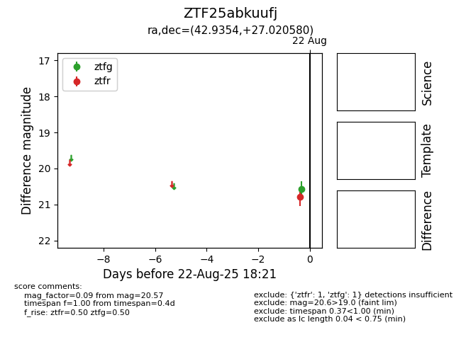

Target ZTF25abkuufj at 2025-08-22 18:21, see:
FINK: fink-portal.org/ZTF25abkuufj
Lasair: lasair-ztf.lsst.ac.uk/objects/ZTF25abkuufj
ALeRCE: alerce.online/object/ZTF25abkuufj
alt names
ZTF25abkuufj (ztf,alerce)
coordinates:
equatorial (ra, dec) = (42.9354,+27.02058)
galactic (l, b) = (153.5002,-28.61588)
photometry
last ztfg=20.57, ztfr=20.78
1 ztfg, 1 ztfr detections
